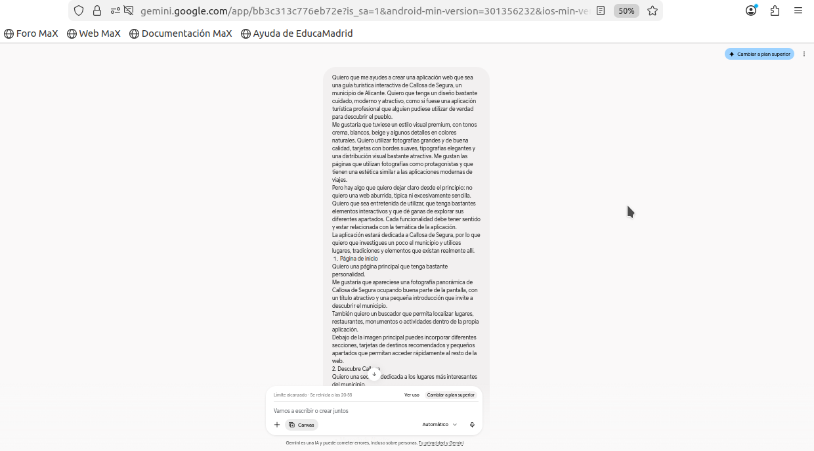

1. Planteamiento inicial, estética y estructura de la guía
DI1.pngComo no me cabe en la imagen escribo aquí el prompt usado y con lo que salga en la imagen lo asimilas: Quiero que me ayudes a crear una aplicación web que sea una guía turística interactiva de Callosa de Segura, un municipio de Alicante. Quiero que tenga un diseño bastante cuidado, moderno y atractivo, como si fuese una aplicación turística profesional que alguien pudiese utilizar de verdad para descubrir el pueblo. Me gustaría que tuviese un estilo visual premium, con tonos crema, blancos, beige y algunos detalles en colores naturales. Quiero utilizar fotografías grandes y de buena calidad, tarjetas con bordes suaves, tipografías elegantes y una distribución visual bastante atractiva. Me gustan las páginas que utilizan fotografías como protagonistas y que tienen una estética similar a las aplicaciones modernas de viajes. Pero hay algo que quiero dejar claro desde el principio: no quiero una web aburrida, típica ni excesivamente sencilla. Quiero que sea entretenida de utilizar, que tenga bastantes elementos interactivos y que dé ganas de explorar sus diferentes apartados. Cada funcionalidad debe tener sentido y estar relacionada con la temática de la aplicación. La aplicación estará dedicada a Callosa de Segura, por lo que quiero que investigues un poco el municipio y utilices lugares, tradiciones y elementos que existan realmente allí. 1. Página de inicio: quiero una página principal que tenga bastante personalidad, con una fotografía panorámica de Callosa de Segura ocupando buena parte de la pantalla, un título atractivo y una pequeña introducción que invite a descubrir el municipio, además de un buscador para localizar lugares, restaurantes, monumentos o actividades dentro de la aplicación y secciones o tarjetas recomendadas debajo. 2. Descubre Callosa: quiero una sección dedicada a los lugares más interesantes del municipio, con categorías claras, fichas informativas de cada sitio y opciones interactivas para seguir explorando el contenido sin que resulte pesado.
